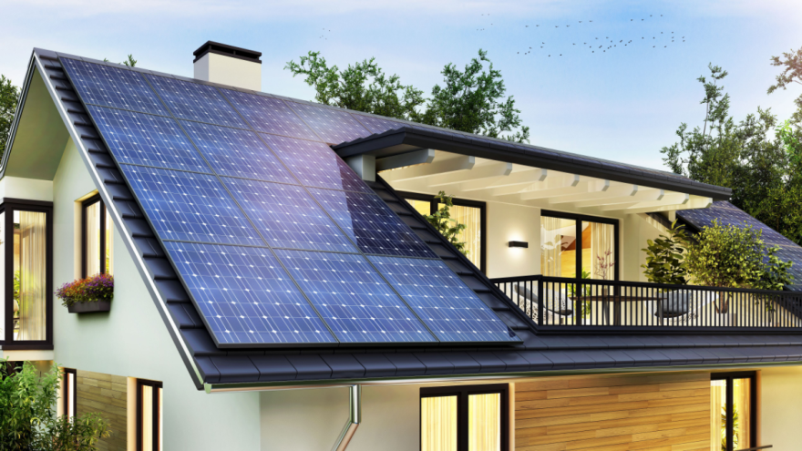
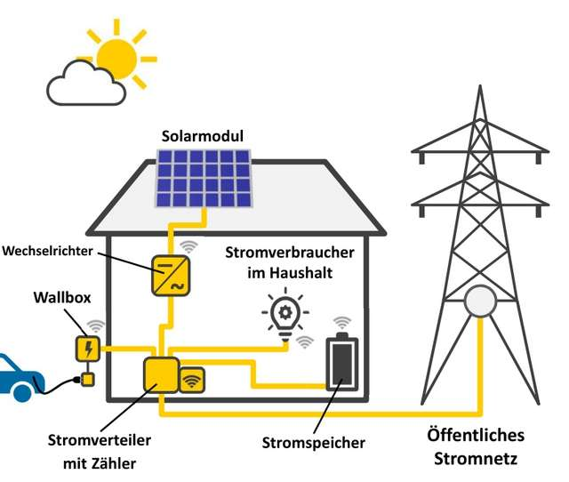
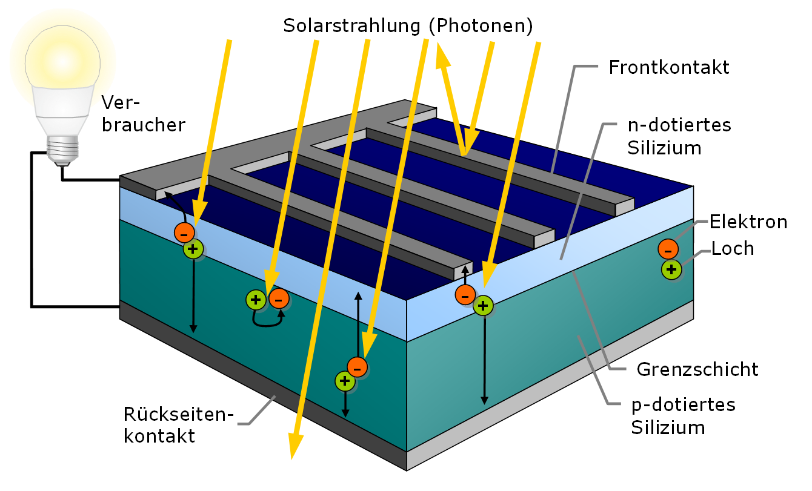
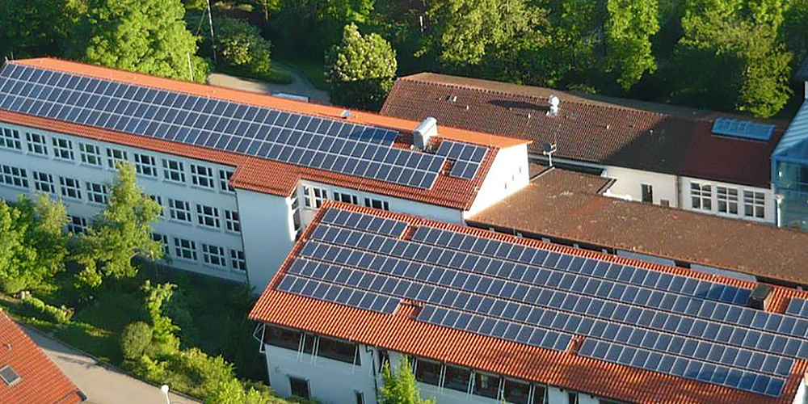
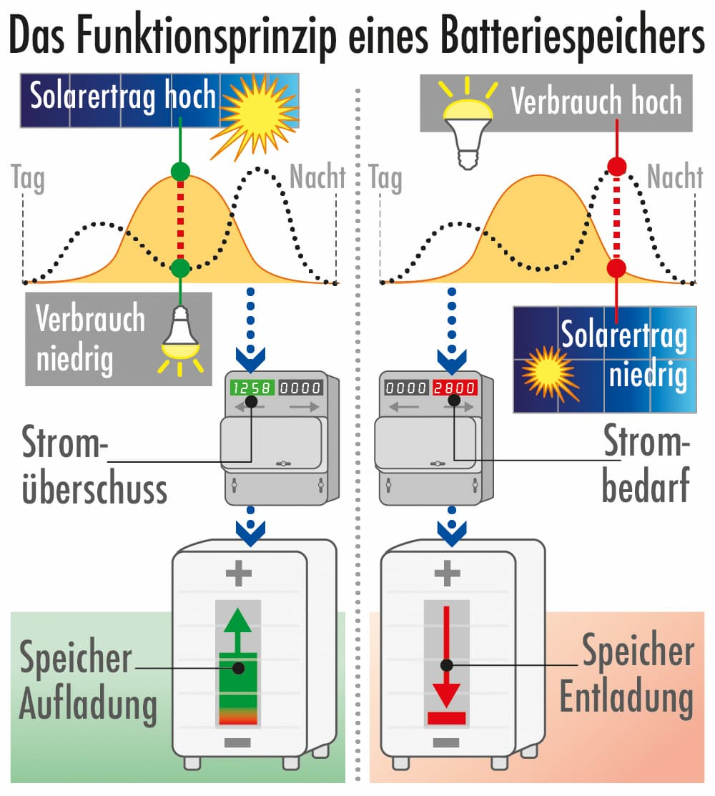
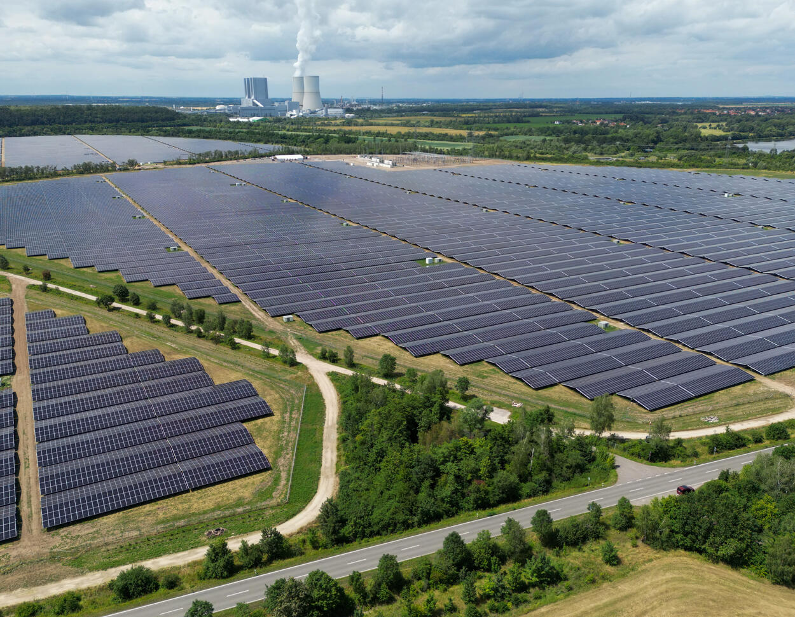
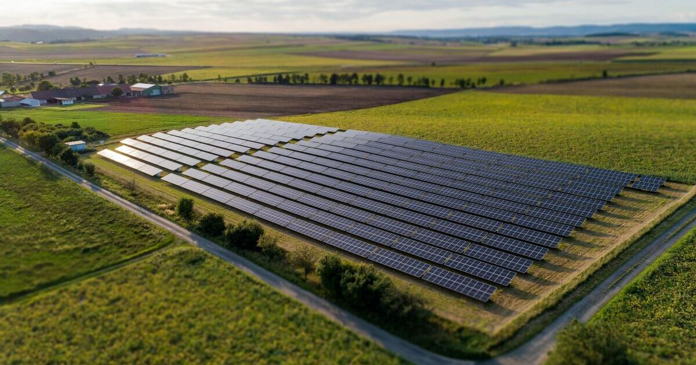

1. Licht trifft auf Silizium
Sonnenlicht liefert Energie. In der Solarzelle werden Elektronen beweglich.
Physik | Klasse 8


Eine Solarzelle besteht aus Halbleitermaterial, meist Silizium. Lichtteilchen treffen auf die Zelle und bringen Ladungen in Bewegung. Dadurch entsteht elektrische Spannung.

Merksatz: Photovoltaik wandelt Lichtenergie direkt in elektrische Energie um – ohne Turbine und ohne Generator.
| Zeichen | Bedeutung | Einheit |
|---|---|---|
| P | elektrische Leistung | W |
| ESonne | Sonneneinstrahlung pro Fläche | W/m² |
| A | Modulfläche | m² |
| η | Wirkungsgrad | ohne Einheit |
Die Stromerzeugung ist tagsüber am größten. Nachts liefert eine PV-Anlage keinen Strom.
Im Sommer ist der Ertrag meist höher als im Winter, weil die Sonne länger und stärker scheint.
| Form | Typischer Ort | Besonderheit |
|---|---|---|
| Dachanlage | Wohnhaus, Schule, Halle | Strom kann direkt vor Ort genutzt werden |
| Balkonkraftwerk | Balkon, Terrasse | kleine Anlage für einzelne Haushalte |
| Solarpark | Freifläche | große Strommengen, aber Flächenbedarf |
| Agri-PV | Landwirtschaftliche Fläche | Stromerzeugung und Landwirtschaft kombiniert |
| Floating-PV | See oder Speicherbecken | Module schwimmen auf Wasserflächen |

| Größe | Wert |
|---|---|
| verfügbare Dachfläche | 180 m² |
| nutzbarer Anteil | 70 % |
| Modulleistung | 200 W pro m² |
| geschätzte Jahresproduktion | 900 kWh pro kW installierter Leistung |
| Strombedarf der Schule | 45.000 kWh pro Jahr |
Ein Batteriespeicher kann überschüssigen Solarstrom aufnehmen. So kann ein Teil des Stroms abends oder nachts genutzt werden.

Merksatz: Photovoltaik erzeugt Strom, wenn Licht vorhanden ist. Speicher helfen, Erzeugung und Verbrauch zeitlich besser zusammenzubringen.

